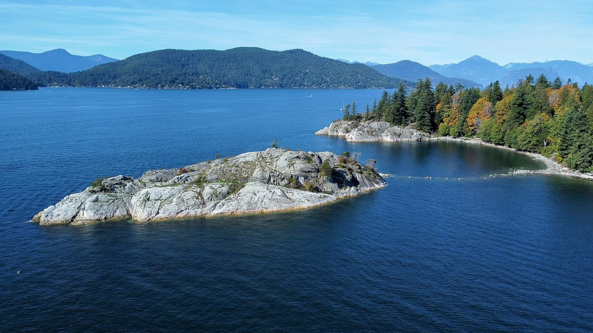
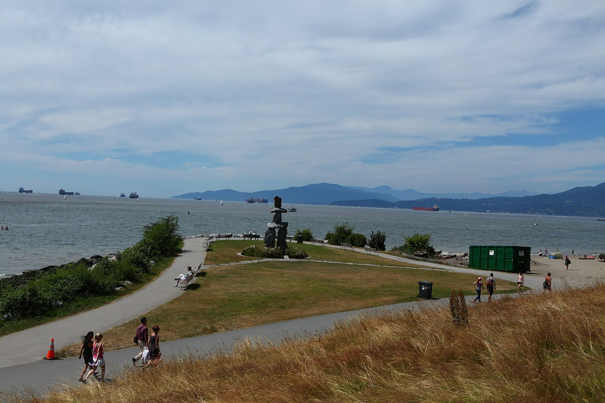

The full story
Imagine our parks, without the lots.
Imagine what our parks could look like if we took back our parking lots. Everything on the zoom page, as one long read.

Three asks
- Take them back. Run public park lots in-house or through a public body, not a private operator like Impark.
- Keep what we need. Pickups, accessible stalls, trailheads and free short stops stay.
- Green the rest. Turn surplus asphalt into grass, trees, creeks and plazas.
1 · Who runs which lot
| Where | Land owner | Operator | Rate | Free short stop? |
|---|---|---|---|---|
| West Van destination parks | District of West Vancouver | Impark (private) | $5.08/hr incl. tax, 7am–10pm, no day pass | No (residents free with pass) |
| Ambleside | District of West Vancouver | Impark (private) | $2.50/hr | Yes, 90 min a day |
| Granville Island | Federal land, managed by CMHC | Impark (private) | $1/hr mornings & evenings; midday $2–6/hr Unverified | No |
| District of North Vancouver parks | District of North Vancouver | Indigo (private) | $3/hr, 8am–6pm, Mar 1–Oct 31 2025 rate, unverified | Resident pass $10 + GST 2025, unverified |
| Vancouver parks | Vancouver Park Board | EasyPark (city-owned nonprofit) | Varies; pilot: first 3 hours free for patrons, then $3.50/hr | Yes at pilot sites |
West Vancouver chose a third party to “transfer most, if not all, operational costs onto the operator”, and picked Impark through open procurement; net revenue is reinvested into the subject parks (report; pay parking). Residents park free with a pass; accessible placards and Veterans plates are exempt from May 1, 2025. In Ambleside, pay parking doesn’t apply where the Squamish Nation is the rightsholder.
On Granville Island, Impark handles enquiries and tickets, and CMHC calls parking “one of two main sources of revenue for Granville Island” (parking; Daily Hive). In the District of North Vancouver, “Indigo manages and enforces pay parking” (DNV; Seymour Art Gallery). In Vancouver, “paid parking is managed by EasyPark”, a city-owned nonprofit, across 180 lots and about 10,300 stalls (Park Board; 2011 contract).
2 · The money
West Vancouver’s pay parking raised more than $550,000 net in its first full year, against a forecast of $256,000; gross revenue was over $639,000 in 2024 from three parks and $825,000 in 2025 with Ambleside. The projections “do not account for a management fee to the contracted service provider” (report; key topics). Impark’s fee: not published.
“…was intended to respond to limited available internal staff resources… In-house management opportunities can be reviewed in the future.” West Vancouver report to Council
Vancouver’s park lots brought in about $9.5 million in 2024; the Budget Outlook calls parking a “short-term opportunity to generate revenue” (strategy report).
A private lot “ticket” is a notice, a claim for breach of contract. CBC showed Impark signs warning of an “$85 fee plus GST”, and reported in 2019 that “a $3.50 parking charge can turn into an $89 fine” (CBC; Georgia Straight).

3 · Empty asphalt
- Stanley Park: Third Beach average daily peak occupancy 25%, 24% and 24% (2017–2019); Prospect Point Picnic 12%, 13%, 13%; only 3 of 15 west-side lots over 50% (memo).
- Vancouver: peak use about 70% weekdays and 80% weekends; most stays under 2 hours (strategy).
- Ambleside: 90%, 91% and 90% of stays were 120 minutes or less in the three recent counts (West Vancouver).
- Granville Island: parking is “over a quarter of current land use” (GI 2040).
4 · We’ve done this before
- Ambleside waterfront: 32 Argyle lots bought since 1975; 1448 Argyle opened as park in summer 2024 (West Vancouver).
- Concord Community Pop Park, 2018: a former parking lot at Northeast False Creek (PWL).
- Rainbow Park: a 0.8-acre pay lot closed Jan 1, 2020, opened spring 2022 (Urban YVR; City).
- Sunset Beach pop-up plaza, June 13, 2021 (GM report).
- Canyon Creek, June 2025: 65 parking stalls converted to greenspace (City).
- Main & 7th: a long-time parking lot, now a 1,000 m² park (City); opening date Unverified.
5 · My story
On October 22, 2026 at 8:39 PM, I spent a few minutes at 1661 Duranleau St on Granville Island (Lot 01-0670), picking up from a kids’ art class at Arts Umbrella, with the car attended. Impark left an $85 notice. When I disputed it, it was cancelled “as a one-time courtesy”. A pickup shouldn’t need a courtesy. — @serenetemper
6 · Why now
BC votes on Saturday, October 24, 2026; the final count is planned for Nov 6–10 (Elections BC). New councils in West Vancouver and a new Vancouver Park Board take office this fall (North Shore News; Vancouver results). West Vancouver says in-house management can be reviewed, and the Park Board’s strategy is in its pilot year.
For contacts, see the Read section of the zoom view; for every link, see the sources.